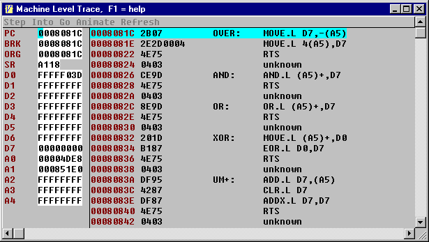

Low Level Debugger
The low level debugger is a single step utility that uses the trace bit on 68K/Coldfire CPUs or the T1 interrupt in 8031 CPUs. It steps through machine instructions one at a time or many at a time, like a simulator. The debugger has its own thread, but you have to be careful what the code modifies. This utility is mostly useful for debugging compute-intensive algorithms.
The Forth way is to factor out the slow part into words that are so simple you don't need a debugger like this. But, this kind of thing is a nice learning tool and sometimes you really need raw speed. LOBUG.G is the source for the debugger.
| Table TR1. Key usage | |
| F1 | Help screen |
| F2 | Toggle browse/edit (white = editable) |
| F5 | Upload from target memory |
| Enter | Accept edited field |
| ESC | Done |
| ^C | copy to clipboard |
| [S]tep | Run until PC points to the next line |
| [I]nto | Execute one instruction |
| [G]o | Run until breakpoint (blue). |
| a[N]imate | Does [I]nto until a key is pressed. |
| Click | Place breakpoint or set cursor |
| Double click | Place PC or browse tokens |
TRACE OVER brought up this screen:

It's fairly simple to use, but not very forgiving of mistakes. Here are some caveats to avoid crashes: